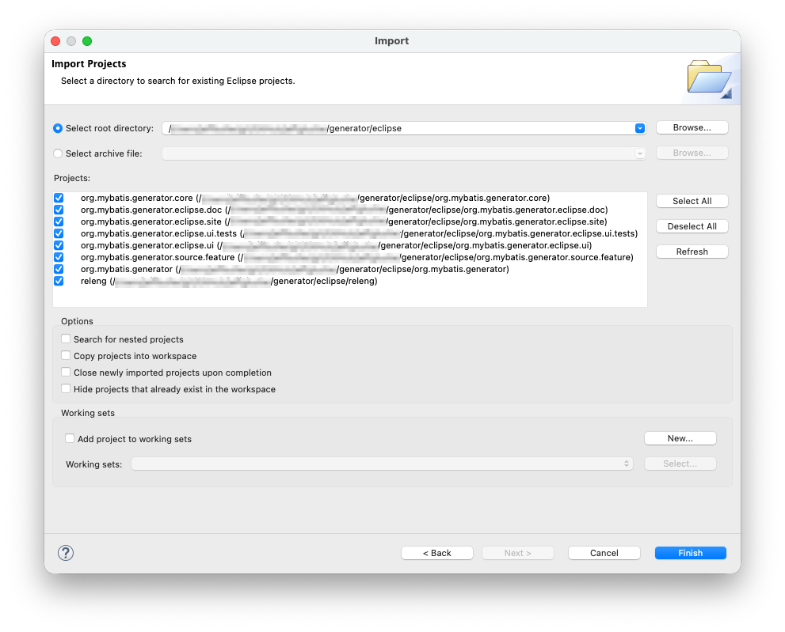

This page contains reference information about how to build and debug the MyBatis Generator (MBG) feature from source.
The feature build uses Eclipse Tycho - which is Maven support for Eclipse projects. Tycho is a thin wrapper over the normal eclipse PDE processes. Even though the projects have a pom.xml, the projects are not structured like normal maven projects. Within Eclipse, you still need to use normal PDE support and editors to modify the feature.
The MBG feature is structured as five different Eclipse projects - a feature project, and four plugin projects. The feature project groups the four plugins together for easy installation. The projects are structured as follows:
| Project | Description |
|---|---|
org.mybatis.generator |
This project is the Eclipse feature project for MBG. |
org.mybatis.generator.core |
This plugin holds the Java source for the core MBG library. Source from the core MBG source tree is copied into this plugin during the build. There is an Ant build file in this plugin (copySource.xml) that performs the copy. If you find a bug in the core MBG, you must make the correction in the core source tree - NOT this plugin. |
org.mybatis.generator.eclipse.core |
This plugin holds Java support classes for the other plugins. This plugin does not contribute to the Eclipse user interface. This plugin includes classes for Java file merging, and Eclipse implementations of the MBG callback interfaces. |
org.mybatis.generator.eclipse.doc |
This plug-in holds the documentation for MBG. There is an Ant build file in this plugin (buildDoc.xml) that will build the documentation and package it for inclusion into the Eclipse help system. The Ant script merges the core MBG documentation into the eclpse documentation. If you need to correct something in the core MBG documentation, you must make the correction in the core MPB project - NOT the eclipse documentation project. |
org.mybatis.generator.eclipse.ui |
This plug-in holds the Java code for the Eclipse user interface for MBG. If you
are experiencing trouble with the plugin specific features (like the integrated Ant task), then
the code for those features will be found in this plugin. An Ant script in this plugin
(copyDtds.xml) will copy the DTDs from the coure MBG source tree into a location suitable for
packaging in this plugin.
This plugin also contains a custom Ant builder for the Ant task. This is required because of the way that eclipse accepts contributed Ant tasks - they need to be in a separate JAR from the main plugin. |
There are four other Eclipse projects that are used in the build of the feature:
| Project | Description |
|---|---|
org.mybatis.generator.eclipse.parent |
This project is a Maven parent project for the other projects. |
org.mybatis.generator.eclipse.site |
This project is a P2 publishing site that is used to publish the feature. |
org.mybatis.generator.eclipse.core.tests |
This project is a plugin fragment that holds unit tests for the org.mybatis.generator.eclipse.core plugin. |
org.mybatis.generator.eclipse.tests.harness |
This project is a plugin that contains specialized AST visitors and custom Hamcrest (http://hamcrest.org) matchers that are used in the test fragment for writing unit tests that cover the Java merge functionality. |
The following instructions show how to setup an Eclipse workspace for building the MBG feature and plug-ins from the latest source in the GitHub repository. We assume that you are somewhat familiar with git and the Eclipse plug-in development environment (PDE). These instructions also assume you are using Eclipse version 4.5.2 (Mars.2) - but this should work on future eclipse versions as well.

org.mybatis.generator.core project. There are two ways to solve this:
pom.xml in the
org.mybatis.generator.eclipse.parent project and selecting
Run As>Maven test. A slight warning: this will download many
dependent JARs from Maven central and eclipse.org the first time you run it.
This method is preferred because it runs the full build for all the plugins. This will make is possible to debug all of the plugin features including documentation.
copySource.xml Ant file in the org.mybatis.generator.core
project. This should resolve the build errors.
At this point the projects should be successfully compiled in Eclipse. If you want to debug something in the plug-in, you will need to start another instance of Eclipse in debug mode. The following instructions explain how to do this.
Once you have the other instance of Eclipse started you should create a new Java project in the new workspace, create and fill out an MBG configuration file, and then run MBG. MBG should eventually hit your breakpoint, and then you step through the code. Note that the "Manual Test Scripts" page in these instructions has instructions for creating a test project if you need one.
The following classes will likely be of the most interest in debugging:
| Class | Description |
|---|---|
org.mybatis.generator.eclipse.ui.launcher.GeneratorLaunchConfigurationDelegate |
This class is used by eclipse launch support to execute a launch. If you are
experiencing a problem where the attributes you set in a launch configuration seen
to be ignored or aren't working, you should set a breakpoint in the
launch method of this class to follow the launch from the beginning.
Note that the launcher uses Ant under the covers, so this method simply sets up an Ant environment and launches Ant. If you are experiencing issues in the core functionality of MBG, see below for a better staring point. |
org.mybatis.generator.eclipse.ui.ant.GeneratorAntTask |
The MBG launcher uses Ant under the covers, and will eventually cause this task
to be executed. You can set a breakpoint in the execute method of this
class to follow the MBG code generation process from the beginning.
Note that eclipse will not be able to find the source code initially, so the
debug window will just show a blank class file. Add the |
org.mybatis.generator.eclipse.core.merge.JavaFileMerger |
This class implements the Java file merge function. You can set a breakpoint
in the getMergedSource method to follow the merging process.
|
The plugin fragment project org.mybatis.generator.eclipse.core.tests
contains unit tests for many of the classes in the
org.mybatis.generator.eclipse.core project.
These tests cover the core functionality of Java code merging and workspace file resolution
that is an extra capability added by the eclipse feature.
The tests will be run during a maven build of the feature, but you can also run them directly in eclipse. Running these unit tests is similar to running regular unit tests in eclipse with the following exceptions:
To run all tests, run the class org.mybatis.generator.eclipse.core.tests.RunAllTests
which contains a test suite of all unit tests.
The documentation for MBG is integrated into the Eclipse help system.
The documentation is partially generated (JavaDocs), partially copied in from the
core MBG source tree, and partially maintained in the plugin itself.
This full documentation set is not in source control because it is partially generated. If you would
like to rebuild the documentation, simply execute the buildDoc.xml file
in the org.mybatis.generator.eclipse.doc project (an Ant build file).
This step is included in the Maven build, so if you are using the Maven build you will
not need to do this.
If you want to build an updated version of the feature and distribute it locally, then follow these steps:
pom.xml
file in the org.mybatis.generator.eclipse.parent project.target/repository
directory of the org.mybatis.generator.eclipse.site project.After the build executes, the easiest way to install this new version of the feature is to create a new local repository that points to this directory (Help>Install New Software...) and install the new version with P2.
If you are interested in publishing a new version to Bintray, please see the instructions on the Publishing page.